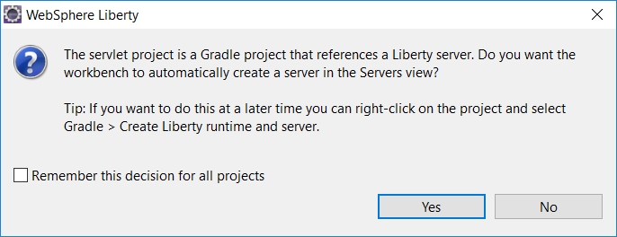

WebSphere Liberty 17.0.0.4 is now available to download. The WebSphere Developer Tools 17.0.0.4 now integrate with the Liberty Gradle plugin so you can import your Liberty Gradle projects into Eclipse. Built on Open Liberty, this release of WebSphere Liberty also includes Concurrency updates, JSF Container 2.2 updates, OpenAPI 3.0 updates, and more.
If you want to learn more about WebSphere Liberty 17.0.0.4 or ask questions about it, join one of our free webcasts on 17 January and 24 January.
Download WebSphere Liberty 17.0.0.4 Ask a question on Stack Overflow
What’s new in WebSphere Liberty 17.0.0.4?
Everything in Open Liberty 17.0.0.4 is available in WebSphere Liberty 17.0.0.4:
- JSF Container 2.2 (bring your own JSF implementation)
- Concurrency updates
- Open tracing (opentracing.io implementation)
In addition, WebSphere Liberty includes the following new features and updates:
- Request for enhancements (RFEs) (Added 2018-01-18)
- Gradle integration with WebSphere Developer Tools
- OpenAPI 3.0
- Social login
- Throttle events in Logstash log collector
Request for enhancements (RFEs)
In this release, the following RFEs were completed:
- 75186: 3rd party JSF Implementation usage with CDI on WebSphere Liberty Profile
- 90862: Managed executors (concurrent-1.0 feature) should be able to limit maximum concurrency and how many requests can queue up
Gradle integration with WebSphere Developer Tools (WDT)
Import web application Gradle projects into WDT for developing in Eclipse. You can now take advantage of WDT features from your Gradle projects, including running applications directly from the workspace, incremental publishing, and using the server configuration editor while maintaining the Gradle structure of your project.
For fully integrated Gradle development of web applications within WDT:
- Set up your Gradle project to use the Liberty Gradle plugin (see the Liberty Gradle plugin docs, or have a look at one of the samples: Servlet sample, JPA sample, JTA sample).
- Import your project as an existing Gradle project into WDT: File > Import > Gradle > Existing Gradle Project
- When prompted to create a server, click Yes:
 - Start working on your application.
When you make changes to your application or server configuration WDT automatically runs the Gradle tasks needed to publish your changes.
Find out more in the Knowledge Center documentation.
The open source Liberty Gradle plugin is used with the Gradle WAR plugin to install project WAR files and loose applications to a Liberty Server. For more details, see the Liberty Gradle plugin documentation in GitHub.
OpenAPI 3.0
You can now customize the URLs for public endpoints in the openapi-3.0 feature.
By default, two endpoints are available for a server:
GET http://host:http_port/api/docs
GET http://host:http_port/api/explorer
You can change the URL of the public endpoints with the publicURL attribute in the server.xml. For example, setting the following configuration in the server.xml makes the public REST API documentation available with GET http://host:http_port/myAPI/docs and http://host:http_port/myAPI/explorer:
<openapi publicURL="myAPI" />
Social Login
Server administrators can now configure multiple social media providers to protect a given web application so that users can choose which provider they want to use to authenticate with your application:

To enable this functionality, server administrators simply enable the feature in server.xml and configure multiple social media providers to protect an application. The social media providers can either protect all applications or use authentication filters to protect a specific endpoint. Additional configuration is not necessary.
<featureManager>
<feature>socialLogin-1.0</feature>
</featureManager>
Throttle events in Logstash log collector
Sending a sudden burst of events to Logstash can overwhelm the downstream logging stack.
To limit the number of events being sent through per second, customize the maximum events by setting the new maxEvents attribute in the logstashCollector element in the server.xml. The default value is 0, meaning there is no limit to the number of events sent per second. If you would like to throttle the events, set the value to an integer greater than 0.
For more details, see the Knowledge Center documentation.
Download Liberty 17.0.0.4 Ask a question on Stack Overflow

We’d love you to get involved in any way that you can, such as testing the code in ways that you use Liberty and raising issues on GitHub, or create pull requests on the code and documentation. You can contribute to discussions about Open Liberty on the mailing list.
The download button at the end of the article says 17.0.0.3 which is probably because of cut-n-paste and isn’t a big deal because the link picks up the latest version anyway, but I thought you might like to know.